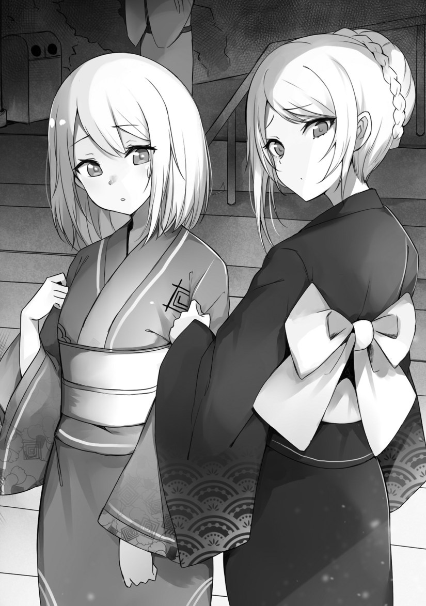

Principality
There was a shrine a little bit away from the summer festival venue.
Sitting down on the stairway leading there, I hung my head and shed tears in frustration.
Was it strange to have summer festivals and other elements from Japan here? Don’t complain to me. I thought of it as strange, but this was the mad world of an otome game. Those who thought it would be logical would be wrong.
“I wanted the charms.”
Even now, I still had the desire to chase after the guy and buy everything from him. However, Anjie and Olivia didn’t allow it.
They watched over me.
Seeing me feeling quite down, the two seemed rethink their stance.

“D, did you want them that badly?”
Anjie thoroughly examined my facial expression.
It seemed that she had escaped from her followers.
They were frantically trying to regain Anjie’s trust. They were acting quite selfishly though, since they had abandoned her before at a critical moment.
However, leaving that aside, there was the matter of the charms.
“I was really looking forward to this day. I couldn’t sleep last night.”
I wiped my tears.
Was I acting? No, I was genuinely crying in frustration!
Oliva started talking to me, but spoke very awkwardly.
“B, but, I don’t think you should do what you had tried. Buying it all with money, I mean.”
I understood what she was trying to say, but I thought of it as odd that she was denying the ability to buy goods with money.
“I’m paying with money, so isn’t it fine? I could have even bought them at a hundredfold the amount.”
If the charms had the same effect as in the game, then I wanted to buy them at even a hundred times the price.
The item I wanted to collect on this floating island was a charm from that masked man.
However, I wouldn’t know the contents of what I would buy.
In the game, it was completely randomized, and even if one got the short end of the stick, they would still get a “Charm of Good Luck”.
Better than that though was the “Charm of War’s Fortune”, improving battle-related abilities, and increasing the growth rate for physical stats.
The jackpot was the magic-related “Divine Protection Element”. That thing had the game-like effect of increasing magical power.
The growth rate of magic stats would increase, and one’s aptitude to the attribute would increase as well.
For that reason I had been pulling some strings a year prior so that I could go to this floating island during the field trip. What did I do? I just bribed some teachers.
Since the items obtained on this floating island boosted level-ups, I had been challenging the dungeon as little as possible at the academy. Yet──
My plans to become the strongest character had been ruined.
Anjie and Olivia both had expressions of worry.
It seemed that they didn’t think I would cry.
As I was sniffling and crying, the summer festival was approaching its final stage, and the masked man returned.
It seemed that almost all of his items had been sold.
“Ah, there you are. Sir Noble, there are two left, so here you go.”
I got up and bought the two charms.
“Please be a good one!”
“Um, actually, there’s no gain-or-loss factor involved. It’s just that there are different kinds.”
What an idiot! The results varied precisely because there was a variety!
I took the two bags and slowly removed the white paper from one.
My face turned red with tension.
When I opened it, there was a white orb about as large as a marble. It was a charm with metal fittings and a red string attached.
Not good. I had no talent for white──healing magic.
There was no point in carrying it.
When I opened the next one a little roughly, this time a red orb appeared. Both of them had very beautiful colors, but I didn’t really know if they would have an effect.
I didn’t feel anything in particular.
Did they really have a divine blessing inside them?
“Red? I have no talent for red.”
Anjie tilted her head.
“What are you talking about? Isn’t it fine?”
The masked man went up the stars and left.
“Well then, I’ll be heading back. Take care. Though, it seems the charms match better with the ladies over there than with you, Sir Noble.”
The masked man vanished, as if disappearing into the darkness.
Leaving that aside, did these match better with Anjie and Olivia than with me? I certainly thought so.
What I wanted was something yellow or blue.
I wasn’t aiming for red or white.
I got the short end of the stick, in a bad way.
I dropped my shoulders and gave a charm to each of them. The red orb for Anjie, the white one for Olivia.
“Y, you’re giving them to us?”
Anjie was slightly hesitant. Perhaps it was from me simply handing over the items I had wanted to the point of tears.
“These aren’t what I was aiming for.”
“I, I see.”
Olivia also reluctantly refused.
“I, I can’t accept this.”
“It’s fine, just take it. There’s no point in me having it. It’s not like they’re expensive items either.”
When I tossed it at her, Olivia grabbed it with a troubled expression.
At my wits’ end, I sat down on the stairway and made a deep sigh.
“Leon, u, um──”
Olivia wanted to say something, but at that moment, Anjie’s followers had arrived.
“M, Milady!”
Hearing that voice, Anjie ran off in a panic.
“S, sorry. I’ll be heading off.”
Girls who were Anjie’s followers chased after her as she escaped.
Once they left and the noise they made faded out, this time boys who were her followers us spotted and surrounded me.
There were three of them.
“Baltfault, you again?”
“Don’t get so conceited just because you got a slight promotion.”
“You’re just a lowly noble trying to butter up Milady.”
I raised my head and looked at the faces of these incompetent boys. I could tell they were worthless just from my own perception. I sensed a certain irresponsibility in them. Now that they had betrayed someone in a critical moment, no matter what they would do, it would not be an easy task to regain her trust back to positive levels.
Since they’re trustworthiness is in the negatives right now, perhaps it would go to zero if they did their absolute hardest.
I wasn’t in the mood to humor them at this late of a time.
“Oh? Are you guys frustrated? Envious that your lady has taken a liking to me? How unfortunate. If you guys hadn’t deserted her during the uproar of the duel, you would have been Anjie’s favorites. You guys may be good at reading the mood in the academy, but you should take more notice to reading the mood in the world of nobles, or rather society as a whole. Are you not ashamed of trying so hard to make up to her now?”
As I agitated them, I motioned my hand for them to come at me.
When I tried to annoy them into accepting my challenge, Olivia stood in front of me and stretched out her arms, as if to protect me.
“D, don’t fight!”
One of the boys yelled.
“He’s the one trying to pick a fight!”
“I, I’m sorry. B, but, you still can’t fight.”
“──Tsk, let’s go. He’s just a pathetic guy who hides behind a girl.”
I really wanted to retaliate against what he just said. These were the people who wanted Anjie as their shield, after all.
Once the boys left, I spoke to Olivia.
“It would have been fine if you left things alone. Those guys wouldn’t want to start a fuss, so I think they would’ve backed off at some point.”
I agitated my opponents because I knew they wouldn’t lay a hand on me.
Though, since youths were full of passion, it was possible that they would resort to violence. If that happened, there would be punishment from society. Fights between adults didn’t stop at just exchanging fists.
When Olivia turned around towards me, she let out a sob.
“──I’m sorry. Leon, I’m really sorry. I wanted to apologize all this time. I’m sorry for the trouble I caused when we were suppressing the sky pirates. I’m sorry for──the mean things I said.”
I scratched my head in front of a crying and apologizing Olivia.
“There’s nothing for you to apologize for, though. In the first place, it shouldn’t be you apologizing to me, but──”
When I was about to say something, but my sight turned towards an old woman who came nearby.
Just how long had she been here? It was a little frightening.
“Um, who are you?”
Pulling attention towards the old woman, Olivia also looked surprised.
The old woman smiled while carrying a cane.
“Well, I just want to talk to you because you took care of my son.”
I averted my gaze from the old woman. Her son was likely the masked man who sold the charms.
“Perhaps you think that what I did was quite inexcusable──”
While I was starting to explain myself, the old woman took out a white bag from her pocket.
“That was the first time someone wanted to pay a large amount of money for the charms I made. However, they were for the many people who were looking forward to them at the festival. I feel bad for what little there were in the end, so here you go.”
Was the item inside the white bag a Charm of War’s Fortune? Indeed it was.
“A Charm of War’s Fortune, is it? Though, the shape looks different, doesn’t it?”
“You’re quite the keen gentleman. I made it specially, is it to your liking?”
A new prototype model?
It was a bit different from what I wanted, but I was glad that I got it.
“Thank you so much. Oh, the cost──”
“No need. If you want to repay me, then please visit the shrine. This is a shrine for marriage, so you may receive a blessing.”
After saying that, the old woman went up the stairs.
Was she the priest for the shrine?
While Olivia looked at the stairway in surprise, I examined the charm. Instead of it being a charm decorated with a sword and shield, it featured three swords crossing together. I raised the charm up to my face, and then grasped it tightly in my hand.
“Not bad.”
I wasn’t sure what its effects were, but I took a fancy to the design.
I liked those sword-shaped keychain accessories as souvenirs, after all.
A lot had happened, but I managed to enjoy myself.
At any rate, she said it was a shrine for marriage…and the night was a bit frightening, so I suppose I could visit tomorrow morning.
If I recall correctly, there was an event in the game where the protagonist headed towards the shrine with the capture target they were the closest with──hmm? Could it be?!
As I pondered about various things, I heard a voice.
Olivia seemed embarrassed.
“Leon, she said marriage──”
“That’s how it is. A blessing for marriage. I’m thinking about coming here tomorrow morning. I’ll be wishing for a suitable partner.”
I probably should prepare a large amount of money for it.
When I left the area, Olivia seemed lonely, but I left her alone.
I couldn’t get involved with her anymore.
◇
thanks for the chapter
Thanks for the chaps!!!
Thanks for the chapter.
Leon’s stupidity has become… OVER 9000!!!
I think it’s just that he never considered himself as a contender for the heroine’s hand XD
Its like when you have a childhood friend who you consider as a sister. No matter what she does you will consider it cute but never serious unless she directly confess and kiss you XD
That makes him a perfect ntr mc. Except you don’t want to try screwing with Leon, he makes sure all compound interests are collected.
lol
Im not sure if its considered NTR if the protagonist is not in a official relation with the said girl :p but yes, I agree with you 100%
He has actually. But as a future saint, her status matches the crown prince. It’s politically unsuitable. And until she becomes a saint, she is a commoner. He does not pursue Olivia for the same reason he does not pursue Anjeline and his father married Lora.
I agree completely. However, the rootbof his problem is selfishness and cowardice. He doesn’t want to admit that he has fallen got with of them, and he doesn’t want to use his own strengths to actively attain that he truly desires.
No matter the excuse, the gist of it all is that he is afraid. He doesn’t want to excessivrly dhosjis power and get involved with the world too much. However, the problem is that he has already gotten involved with and fistortdi the world enough, so he should instead be thinking on how to actively lead the world in the right direction while not loosing what he wants……even if it means isolation in the future
In his defense they aren’t adequate partners: one has a status too high and the other too low.
nicely put, it’s what i’ve been thinking ever since vol.1, i understand his fear but i wish the three of them would just get together already
Guessing it’ll be fine. There were three swords, so it’s only suitable for him to go with two partners 🙂
3, counte the Queen in 😉
Every girl nowadays need a sword right? And it’s not like you can’t have one scabbard hold three swords at once… Time for Leon’s foursome
( ͡° ͜ʖ ͡°)
yeah!!! love you dude ! thanks for the chapter, nice item leon !
Thank you so much for the chapter.
Leon you dense motherf*cker
He’s not dense, he is just being negative to himself. He is aware that he like both Livia and Angie, but he is not worthy enough to be with them and also thinking of himself as mob.
Thank you so much for the chapter,
Man….. , Leon is dense and stupid
ohh. I thought they would reconcile back there. But I think Leon got a power up.
Thanks for the chapter.
Well Leon is still dense.
He isn’t dense he was already aware of their feeling but can’t get close to them due to social standings, that and his cowardice.
I like the novel as always, the mc is convinced this is the right way, he seem to have gotten something interesting too… the upcoming chapters is what i look forward to the most though! what saddens me, or rather worries me, is the fact that after this volume, well have to wait until volume 3 gets released… (unless whe’re lucky enough for the said continued volumes to actually already be out)
Honestly, I too am wondering what his altered Charm of War’s Fortunate would do to his invisible stat growth. He might really become a destroyer thst evrn surpasses a god of war. However, as for yge next volume, I joph it comes out soon too, since this novrl is addictive
I would not calle him dense. Is more like negation, he dont see himself worthy enough.
Thx for the chapter !
Thanks for the chapter.
Thanks for the chap~
Rather, Leon, YOU should read the mood geez… *facepalm
Thanks
B-baka!
Thx for the Chapter~!!
(´｡• ω •｡`)
Eh, I feel like Leon’s attitude is pretty appropriate if you ask me, wouldn’t you be kinda awkward towards Anyone if that person told him what Olivia said?
You have to have a highly possitive attitude to just shrug that kinda thing like nothing in a few days.
Let the man suffer a little bit, it’s part of life.
I agree to that.
The charm seems to be a hidden item. Since normally in a game you will not buy many charms that will trigger the old.lady event.
I hope it’s not some sort of cursed charm as payback for badgering her son. Or is it grandson? In the previous chapter he said the charms were made by his grandmother.
Thank you for the translation, aniki !
The picture of Livia and Angie is so cute !
Idiots, just take Olivia pls…
Good luck, after translating this far, only more or less the battle chapters and the series will be over until they release the next light novel volume.
Thank you for the chapter
I can see where this is going. They are going to all show up at the shrine and recieve a blessing together, huh? Keikaku doori.
waduhek that just normal charms i think that rare item…Leon u noob about relationships why u leaving Olivia alone there or u want to go when Anjie together
Meatbun Delivery~
Thank you for the chapter ( ●w●)
Is it really a war type charm tho.. are you sure it isn’t a harem type charm?
ops i forgot thanks for the chapter ????
this raw manga
https://lhscan.net/manga-the-world-of-otome-games-is-a-tough-for-mobs-raw.html
Leon you jerk leaving a girl alone in the middle of the night.
Yet somehow the next chapter will be interesting
Thx for the chapter
Thanks for the updates!
Hmmm it says 2slow2late yet you updated it in just 2 days. Are pushing yourself or something? Hopefully not still thanks for the updates and try to take it easy cause it looks like you are just pushing yourself man.
Personally, i dont think that might be the case. Rather i see himself are too good at delivering each chapter. And as a fan, i think it’s good to get newest chapter asap. We just need enjoying his work and show him our appreciation. That’s it. But no offence dude:) haha, but yes, it’s rather 2fast2soon than 2slow2late O▪O
what AXE said is true????
2fast2soon what a nice name sanse haha….
i never checking raw source but people said we almost there so i think 2slow2late trying caching that…
Nah man don’t worry I’m not offended I’m just used to light novels being updated in a couple of weeks or months so its kinda weird having it updated in days it feels off. Its like seeing you’re friend whose always lazy suddenly become the opposite of that makes you just grab his/her shoulder and ask if he/she sick or something or if that person is being him/herself.
Thank for the chapter!!
Thank for the chapter.
Can’t wait to see what that Charm does in the future
Not sure why there are people thinking that Leon is dense when he is just being negative. Not noticing someone’s feeling isn’t the same as noticing but feeling not worthy of them.
Since a lot of people are getting impatient with how Leon is acting around Livia, I will just leave this here